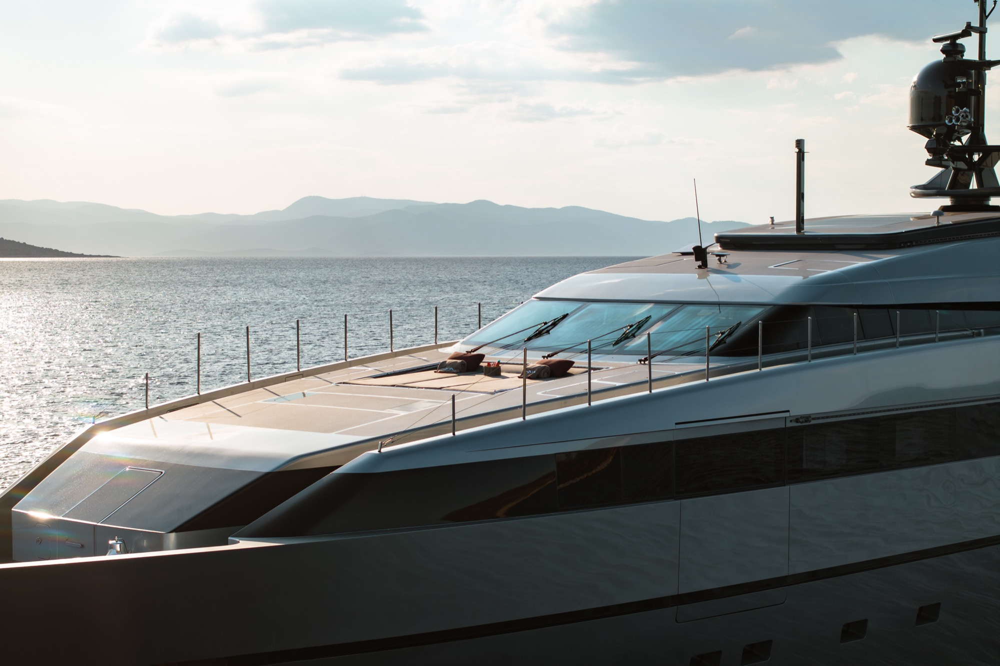
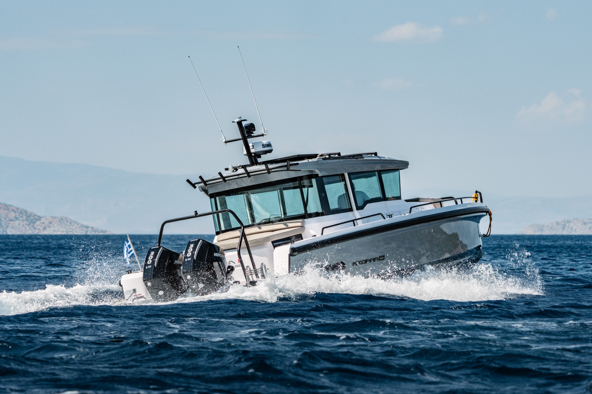
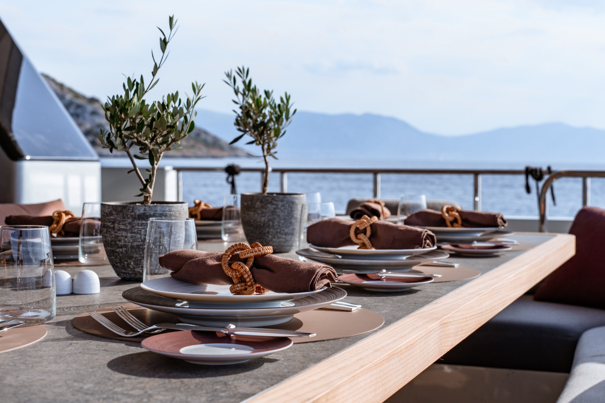

A Sanlorenzo Masterpiece, reborn in 2024.
NAIA is a multi award-winning Sanlorenzo 40 Alloy — a vessel that seamlessly blends timeless Italian craftsmanship with the demands of modern luxury. Born from the vision of Francesco Paszkowski and reborn in 2024 under the direction of Garibaldi Architects, she stands as a testament to what happens when design, engineering, and hospitality converge without compromise.
Italian Craftsmanship, Modern Silhouette.
Originally conceived in 2009 by premier yacht designer Francesco Paszkowski and recently updated in 2024 by the Milanese studio Garibaldi Architects, under the guidance of Sergio Buttiglieri, Sanlorenzo's Style Director, NAIA promises an elegant and stylish journey through its modern, sleek design.
The yacht's exterior silhouette is matched by its interior, which pays homage to its Italian origins with iconic furniture from the most celebrated luxury brands. Every detail of NAIA has been carefully selected to enhance the onboard experience — from the finest plating, cutlery, and crystal for exquisite dining moments to luxurious linens and amenities that ensure ultimate comfort.


Built to thrill, on every horizon.
For those in pursuit of excitement and adrenaline, NAIA stands out with its extensive collection of brand-new water toys and activities. The yacht is equipped to thrill, offering everything from high-speed jet skis to the latest in e-foiling, wakeboarding, diving equipment, fishing gear and everything in between, ensuring that adventure seekers can experience the thrill of the Mediterranean Sea in style.
The addition of the high-speed Axopar 37 XC Cross Cabin chase boat supplements the possibilities for exploration and adventure, allowing guests to discover secluded bays and hidden gems inaccessible to larger vessels.
With stabilisers both at anchor and underway, guests are guaranteed a smooth and comfortable ride, enabling them to fully immerse themselves in the excitement without compromise.
A feast for the senses.
Whether you're indulging in a gourmet meal under the stars or sipping on a cocktail as the sun sets, the culinary journey aboard NAIA is an integral part of its luxury charter experience. NAIA's chef taps into his vast network to source local fresh produce and works with guests to tailor meals to their tastes and nutritional requirements.
Paired with an exceptional selection of cocktails and a crew renowned for their impeccable service, dining on NAIA is a delight for the senses. Kickstart your morning with indulgent breakfasts, experience multi-course fine dining, eat on the beach at private picnics, or enjoy freshly popped corn for movie night and late-night pizza.
